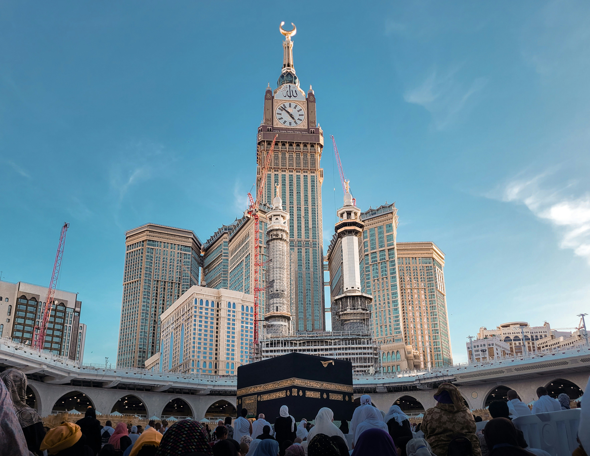

Keutamaan Kota Mekkah
Kota suci yang menjadi pusat ibadah umat Islam, tempat turunnya wahyu, dan tujuan utama perjalanan spiritual yang diberkahi.
Dalil dari Al-Qur'an
إِنَّ أَوَّلَ بَيْتٍ وُضِعَ لِلنَّاسِ لَلَّذِي بِبَكَّةَ مُبَارَكًا وَهُدًى لِّلْعَالَمِينَ
“Sesungguhnya rumah (ibadah) pertama yang dibangun untuk manusia ialah Baitullah yang berada di Bakkah (Mekkah) yang diberkahi dan menjadi petunjuk bagi seluruh alam.” (QS. Ali Imran: 96)
Keistimewaan Mekkah
- Tanah Haram – dilindungi dan dimuliakan oleh Allah, tidak boleh ada peperangan dan perusakan di dalamnya.
- Pusat Kiblat – seluruh umat Islam di dunia menghadap ke Ka'bah saat shalat.
- Masjidil Haram – pahala shalat di sini dilipatgandakan hingga 100.000 kali lipat.
- Tempat Ibadah Haji dan Umroh – rukun Islam kelima yang wajib bagi yang mampu.
- Sejarah Kenabian – tempat kelahiran Nabi Muhammad ﷺ dan sejarah para nabi sebelumnya.

Hadits tentang Keutamaan Mekkah
Rasulullah ﷺ bersabda: “Demi Allah, sesungguhnya engkau (Mekkah) adalah sebaik-baik bumi Allah dan bumi yang paling Allah cintai. Seandainya aku tidak diusir darimu, aku tidak akan meninggalkanmu.” (HR. Tirmidzi)
Kenapa Harus Mengunjungi Mekkah?
Berkunjung ke Mekkah bukan sekadar perjalanan fisik, tetapi perjalanan hati. Saat melangkah di pelataran Masjidil Haram, setiap nafas terasa lebih bermakna. Pandangan pertama ke Ka'bah menggetarkan jiwa, air mata mengalir tanpa disadari, dan hati dipenuhi rasa syukur.
Di sanalah setiap doa dipanjatkan dengan penuh harap, memohon ampunan dan rahmat dari Allah.
Mekkah adalah tempat di mana jutaan umat Islam dari berbagai negara berkumpul dalam satu pakaian, satu tujuan, dan satu hati — mengingatkan kita akan kesatuan dan persaudaraan umat.
Manfaat Spiritual Kunjungan ke Mekkah:
- Pembersihan dosa dan peningkatan iman.
- Peluang memperbanyak amal shaleh dengan pahala berlipat.
- Kesempatan merasakan suasana ukhuwah Islamiyah global.
- Meneladani perjuangan Nabi Ibrahim, Nabi Ismail, dan Rasulullah ﷺ.